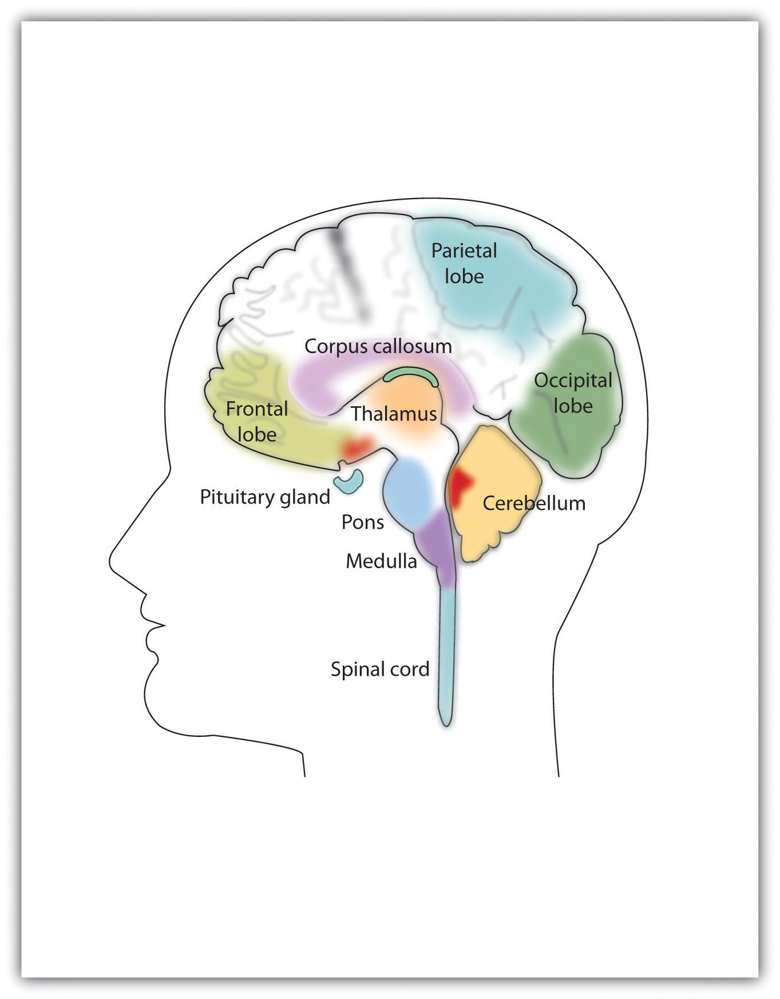
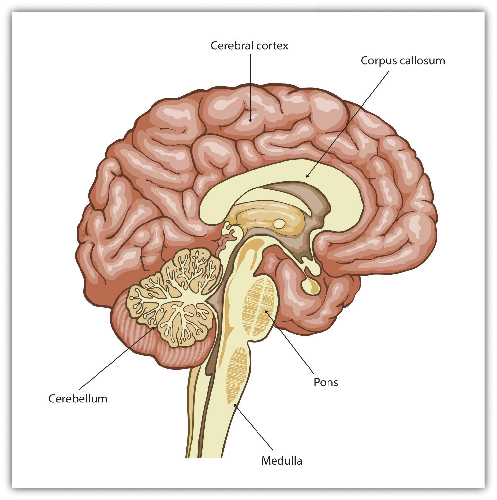
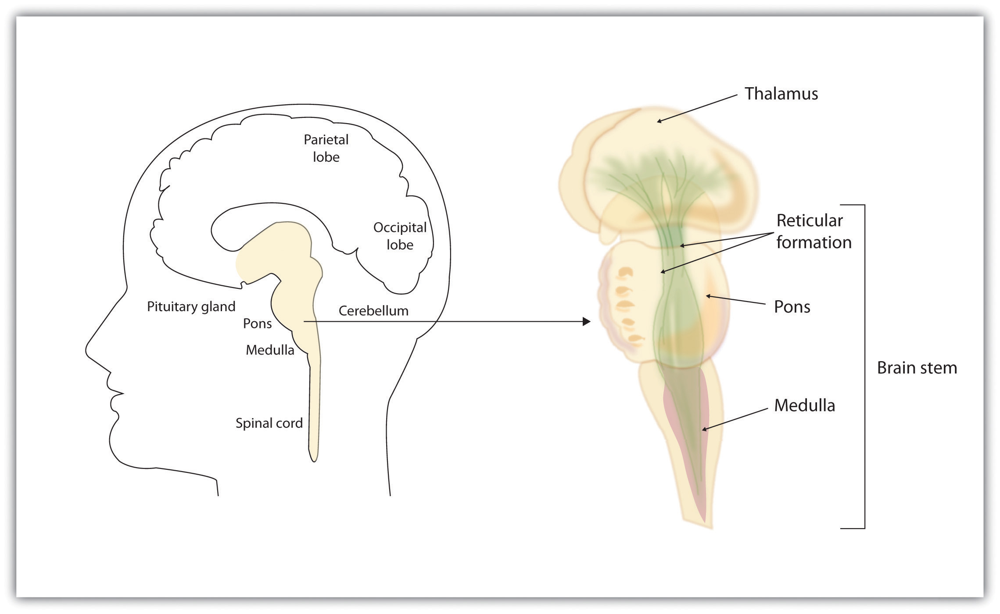
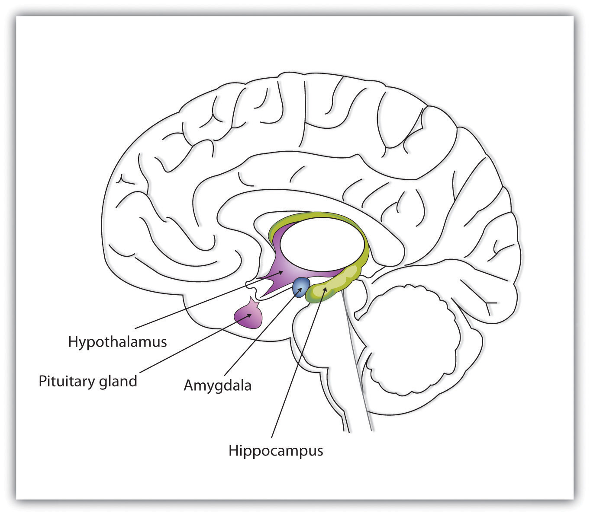
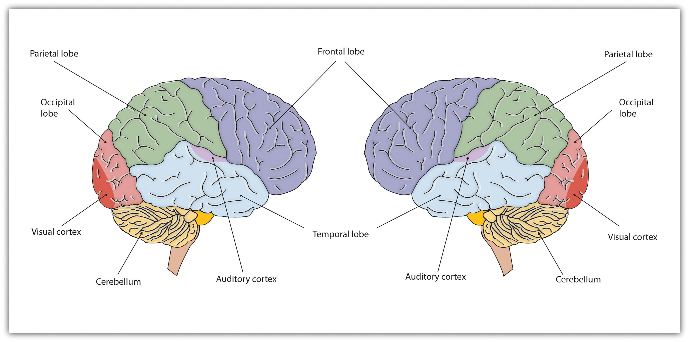
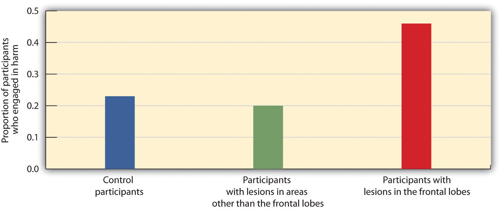
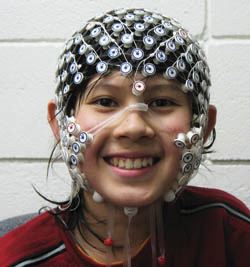

In 1986 Anne Adams was working as a cell biologist at the University of Toronto in Ontario, Canada. She took a leave of absence from her work to care for a sick child, and while she was away, she completely changed her interests, dropping biology entirely and turning her attention to art. In 1994 she completed her painting Unravelling Boléro, a translation of Maurice Ravel’s famous orchestral piece onto canvas. As you can see in Figure 3.1, this artwork is a filled with themes of repetition. Each bar of music is represented by a lacy vertical figure, with the height representing volume, the shape representing note quality, and the color representing the music’s pitch. Like Ravel’s music (see the video below), which is a hypnotic melody consisting of two melodial themes repeated eight times over 340 musical bars, the theme in the painting repeats and builds, leading to a dramatic change in color from blue to orange and pink, a representation of Boléro’s sudden and dramatic climax.
Figure 3.1 Unravelling Boléro
Adams’s depiction of Ravel’s orchestral piece Boléro was painted during the very early phase of her illness in 1994.
Source: Photo courtesy of New Scientist, http://www.newscientist.com/data/images/ns/cms/dn13599/dn13599-1_567.jpg.
Maurice Ravel’s Composition Boléro (1928)
This is a video clip of Maurice Ravel’s Boléro, composed in 1928 during the early phases of his illness.
Shortly after finishing the painting, Adams began to experience behavioral problems, including increased difficulty speaking. Neuroimages of Adams’s brain taken during this time show that regions in the front part of her brain, which are normally associated with language processing, had begun to deteriorate, while at the same time, regions of the brain responsible for the integration of information from the five senses were unusually well developed (Seeley et al., 2008).Seeley, W. W., Matthews, B. R., Crawford, R. K., Gorno-Tempini, M. L., Foti, D., Mackenzie, I. R., & Miller, B. L. (2008). “Unravelling Boléro”: Progressive aphasia, transmodal creativity, and the right posterior neocortex. Brain, 131(1), 39–49. The deterioration of the frontal cortex is a symptom of frontotemporal dementia, a disease that is associated with changes in artistic and musical tastes and skills (Miller, Boone, Cummings, Read, & Mishkin, 2000),Miller, B. L., Boone, K., Cummings, J. L., Read, S. L., & Mishkin, F. (2000). Functional correlates of musical and visual ability in frontotemporal dementia. British Journal of Psychiatry, 176, 458–463. as well as with an increase in repetitive behaviors (Aldhous, 2008).Aldhous, P. (2008, April 7). “Boléro”: Beautiful symptom of a terrible disease. New Scientist. Retrieved from http://www.newscientist.com/article/dn13599-bolero-beautiful-symptom-of-a-terrible-disease.html
What Adams did not know at the time was that her brain may have been undergoing the same changes that Ravel’s had undergone 66 years earlier. In fact, it appears that Ravel may have suffered from the same neurological disorder. Ravel composed Boléro at age 53, when he himself was beginning to show behavioral symptoms that were interfering with his ability to move and speak. Scientists have concluded, based on an analysis of his written notes and letters, that Ravel was also experiencing the effects of frontotemporal dementia (Amaducci, Grassi, & Boller, 2002).Amaducci, L., Grassi, E., & Boller, F. (2002). Maurice Ravel and right-hemisphere musical creativity: Influence of disease on his last musical works? European Journal of Neurology, 9(1), 75–82. If Adams and Ravel were both affected by the same disease, this could explain why they both became fascinated with the repetitive aspects of their arts, and it would present a remarkable example of the influence of our brains on behavior.
Every behavior begins with biology. Our behaviors, as well as our thoughts and feelings, are produced by the actions of our brains, nerves, muscles, and glands. In this chapter we will begin our journey into the world of psychology by considering the biological makeup of the human being, including the most remarkable of human organs—the brain. We’ll consider the structure of the brain and also the methods that psychologists use to study the brain and to understand how it works.
We will see that the body is controlled by an information highway known as the nervous systemA collection of hundreds of billions of specialized cells that transmit information between different parts of the body., a collection of hundreds of billions of specialized and interconnected cells through which messages are sent between the brain and the rest of the body. The nervous system consists of the central nervous system (CNS)The brain and the spinal cord., made up of the brain and the spinal cord, and the peripheral nervous system (PNS)The nerves that link the CNS to the skin, muscles, and glands., the neurons that link the CNS to our skin, muscles, and glands. And we will see that our behavior is also influenced in large part by the endocrine systemThe chemical regulator of the body, composed of the glands that secrete hormones., the chemical regulator of the body that consists of glands that secrete hormones.
Although this chapter begins at a very low level of explanation, and although the topic of study may seem at first to be far from the everyday behaviors that we all engage in, a full understanding of the biology underlying psychological processes is an important cornerstone of your new understanding of psychology. We will consider throughout the chapter how our biology influences important human behaviors, including our mental and physical health, our reactions to drugs, as well as our aggressive responses and our perceptions of other people. This chapter is particularly important for contemporary psychology because the ability to measure biological aspects of behavior, including the structure and function of the human brain, is progressing rapidly, and understanding the biological foundations of behavior is an increasingly important line of psychological study.
The nervous system is composed of more than 100 billion cells known as neurons. A neuronOne of the more than 100 billion cells in the nervous system. is a cell in the nervous system whose function it is to receive and transmit information. As you can see in Figure 3.2 "Components of the Neuron", neurons are made up of three major parts: a cell body, or somaThe part of the neuron that contains the nucleus of the cell and that keeps the cell alive., which contains the nucleus of the cell and keeps the cell alive; a branching treelike fiber known as the dendriteThe part of the neuron that collects information from other cells and sends the information to the soma., which collects information from other cells and sends the information to the soma; and a long, segmented fiber known as the axonThe part of the neuron that transmits information away from the cell body toward other neurons., which transmits information away from the cell body toward other neurons or to the muscles and glands.
Figure 3.2 Components of the Neuron

Figure 3.3
The nervous system, including the brain, is made up of billions of interlinked neurons. This vast interconnected web is responsible for all human thinking, feeling, and behavior.
Source: Photo courtesy of GE Healthcare, http://www.flickr.com/photos/gehealthcare/4253587827/.
Some neurons have hundreds or even thousands of dendrites, and these dendrites may themselves be branched to allow the cell to receive information from thousands of other cells. The axons are also specialized, and some, such as those that send messages from the spinal cord to the muscles in the hands or feet, may be very long—even up to several feet in length. To improve the speed of their communication, and to keep their electrical charges from shorting out with other neurons, axons are often surrounded by a myelin sheath. The myelin sheathA layer of fatty tissue surrounding the axon of a neuron that acts as an insulator and allows faster transmission of the electrical signal. is a layer of fatty tissue surrounding the axon of a neuron that both acts as an insulator and allows faster transmission of the electrical signal. Axons branch out toward their ends, and at the tip of each branch is a terminal button.
The nervous system operates using an electrochemical process (see Note 3.12 "Video Clip: The Electrochemical Action of the Neuron"). An electrical charge moves through the neuron itself and chemicals are used to transmit information between neurons. Within the neuron, when a signal is received by the dendrites, is it transmitted to the soma in the form of an electrical signal, and, if the signal is strong enough, it may then be passed on to the axon and then to the terminal buttons. If the signal reaches the terminal buttons, they are signaled to emit chemicals known as neurotransmitters, which communicate with other neurons across the spaces between the cells, known as synapses.
This video clip shows a model of the electrochemical action of the neuron and neurotransmitters.
The electrical signal moves through the neuron as a result of changes in the electrical charge of the axon. Normally, the axon remains in the resting potentialA state in which the interior of the neuron contains a greater number of negatively charged ions than does the area outside the cell., a state in which the interior of the neuron contains a greater number of negatively charged ions than does the area outside the cell. When the segment of the axon that is closest to the cell body is stimulated by an electrical signal from the dendrites, and if this electrical signal is strong enough that it passes a certain level or threshold, the cell membrane in this first segment opens its gates, allowing positively charged sodium ions that were previously kept out to enter. This change in electrical charge that occurs in a neuron when a nerve impulse is transmitted is known as the action potentialA change in electrical charge that occurs in a neuron when a nerve impulse is transmitted.. Once the action potential occurs, the number of positive ions exceeds the number of negative ions in this segment, and the segment temporarily becomes positively charged.
As you can see in Figure 3.4 "The Myelin Sheath and the Nodes of Ranvier", the axon is segmented by a series of breaks between the sausage-like segments of the myelin sheath. Each of these gaps is a node of RanvierThe break in the myelin sheath of a nerve fiber.. The electrical charge moves down the axon from segment to segment, in a set of small jumps, moving from node to node. When the action potential occurs in the first segment of the axon, it quickly creates a similar change in the next segment, which then stimulates the next segment, and so forth as the positive electrical impulse continues all the way down to the end of the axon. As each new segment becomes positive, the membrane in the prior segment closes up again, and the segment returns to its negative resting potential. In this way the action potential is transmitted along the axon, toward the terminal buttons. The entire response along the length of the axon is very fast—it can happen up to 1,000 times each second.
Figure 3.4 The Myelin Sheath and the Nodes of Ranvier

The myelin sheath wraps around the axon but also leaves small gaps called the nodes of Ranvier. The action potential jumps from node to node as it travels down the axon.
An important aspect of the action potential is that it operates in an all or nothing manner. What this means is that the neuron either fires completely, such that the action potential moves all the way down the axon, or it does not fire at all. Thus neurons can provide more energy to the neurons down the line by firing faster but not by firing more strongly. Furthermore, the neuron is prevented from repeated firing by the presence of a refractory period—a brief time after the firing of the axon in which the axon cannot fire again because the neuron has not yet returned to its resting potential.
Not only do the neural signals travel via electrical charges within the neuron, but they also travel via chemical transmission between the neurons. Neurons are separated by junction areas known as synapsesThe small gap between neurons across which nerve impulses are transmitted., areas where the terminal buttons at the end of the axon of one neuron nearly, but don’t quite, touch the dendrites of another. The synapses provide a remarkable function because they allow each axon to communicate with many dendrites in neighboring cells. Because a neuron may have synaptic connections with thousands of other neurons, the communication links among the neurons in the nervous system allow for a highly sophisticated communication system.
When the electrical impulse from the action potential reaches the end of the axon, it signals the terminal buttons to release neurotransmitters into the synapse. A neurotransmitterA chemical that relays signals across the synapses between neurons. is a chemical that relays signals across the synapses between neurons. Neurotransmitters travel across the synaptic space between the terminal button of one neuron and the dendrites of other neurons, where they bind to the dendrites in the neighboring neurons. Furthermore, different terminal buttons release different neurotransmitters, and different dendrites are particularly sensitive to different neurotransmitters. The dendrites will admit the neurotransmitters only if they are the right shape to fit in the receptor sites on the receiving neuron. For this reason, the receptor sites and neurotransmitters are often compared to a lock and key (Figure 3.5 "The Synapse").
Figure 3.5 The Synapse
When the nerve impulse reaches the terminal button, it triggers the release of neurotransmitters into the synapse. The neurotransmitters fit into receptors on the receiving dendrites in the manner of a lock and key.
When neurotransmitters are accepted by the receptors on the receiving neurons their effect may be either excitatory (i.e., they make the cell more likely to fire) or inhibitory (i.e., they make the cell less likely to fire). Furthermore, if the receiving neuron is able to accept more than one neurotransmitter, then it will be influenced by the excitatory and inhibitory processes of each. If the excitatory effects of the neurotransmitters are greater than the inhibitory influences of the neurotransmitters, the neuron moves closer to its firing threshold, and if it reaches the threshold, the action potential and the process of transferring information through the neuron begins.
Neurotransmitters that are not accepted by the receptor sites must be removed from the synapse in order for the next potential stimulation of the neuron to happen. This process occurs in part through the breaking down of the neurotransmitters by enzymes, and in part through reuptakeThe process in which the neurotransmitters in the synapse are reabsorbed into the transmitting terminal buttons., a process in which neurotransmitters that are in the synapse are reabsorbed into the transmitting terminal buttons, ready to again be released after the neuron fires.
More than 100 chemical substances produced in the body have been identified as neurotransmitters, and these substances have a wide and profound effect on emotion, cognition, and behavior. Neurotransmitters regulate our appetite, our memory, our emotions, as well as our muscle action and movement. And as you can see in Table 3.1 "The Major Neurotransmitters and Their Functions", some neurotransmitters are also associated with psychological and physical diseases.
Drugs that we might ingest—either for medical reasons or recreationally—can act like neurotransmitters to influence our thoughts, feelings, and behavior. An agonistA drug that has chemical properties similar to a particular neurotransmitter and thus mimics the effects of the neurotransmitter. is a drug that has chemical properties similar to a particular neurotransmitter and thus mimics the effects of the neurotransmitter. When an agonist is ingested, it binds to the receptor sites in the dendrites to excite the neuron, acting as if more of the neurotransmitter had been present. As an example, cocaine is an agonist for the neurotransmitter dopamine. Because dopamine produces feelings of pleasure when it is released by neurons, cocaine creates similar feelings when it is ingested. An antagonistA drug that reduces or stops the normal effects of a neurotransmitter. is a drug that reduces or stops the normal effects of a neurotransmitter. When an antagonist is ingested, it binds to the receptor sites in the dendrite, thereby blocking the neurotransmitter. As an example, the poison curare is an antagonist for the neurotransmitter acetylcholine. When the poison enters the brain, it binds to the dendrites, stops communication among the neurons, and usually causes death. Still other drugs work by blocking the reuptake of the neurotransmitter itself—when reuptake is reduced by the drug, more neurotransmitter remains in the synapse, increasing its action.
Table 3.1 The Major Neurotransmitters and Their Functions
| Neurotransmitter | Description and function | Notes |
|---|---|---|
| Acetylcholine (ACh) | A common neurotransmitter used in the spinal cord and motor neurons to stimulate muscle contractions. It’s also used in the brain to regulate memory, sleeping, and dreaming. | Alzheimer’s disease is associated with an undersupply of acetylcholine. Nicotine is an agonist that acts like acetylcholine. |
| Dopamine | Involved in movement, motivation, and emotion, Dopamine produces feelings of pleasure when released by the brain’s reward system, and it’s also involved in learning. | Schizophrenia is linked to increases in dopamine, whereas Parkinson’s disease is linked to reductions in dopamine (and dopamine agonists may be used to treat it). |
| Endorphins | Released in response to behaviors such as vigorous exercise, orgasm, and eating spicy foods. | Endorphins are natural pain relievers. They are related to the compounds found in drugs such as opium, morphine, and heroin. The release of endorphins creates the runner’s high that is experienced after intense physical exertion. |
| GABA (gamma-aminobutyric acid) | The major inhibitory neurotransmitter in the brain. | A lack of GABA can lead to involuntary motor actions, including tremors and seizures. Alcohol stimulates the release of GABA, which inhibits the nervous system and makes us feel drunk. Low levels of GABA can produce anxiety, and GABA agonists (tranquilizers) are used to reduce anxiety. |
| Glutamate | The most common neurotransmitter, it’s released in more than 90% of the brain’s synapses. Glutamate is found in the food additive MSG (monosodium glutamate). | Excess glutamate can cause overstimulation, migraines and seizures. |
| Serotonin | Involved in many functions, including mood, appetite, sleep, and aggression. | Low levels of serotonin are associated with depression, and some drugs designed to treat depression (known as selective serotonin reuptake inhibitors, or SSRIs) serve to prevent their reuptake. |
If you were someone who understood brain anatomy and were to look at the brain of an animal that you had never seen before, you would nevertheless be able to deduce the likely capacities of the animal. This is because the brains of all animals are very similar in overall form. In each animal the brain is layered, and the basic structures of the brain are similar (see Figure 3.6 "The Major Structures in the Human Brain"). The innermost structures of the brain—the parts nearest the spinal cord—are the oldest part of the brain, and these areas carry out the same the functions they did for our distant ancestors. The “old brain” regulates basic survival functions, such as breathing, moving, resting, and feeding, and creates our experiences of emotion. Mammals, including humans, have developed further brain layers that provide more advanced functions—for instance, better memory, more sophisticated social interactions, and the ability to experience emotions. Humans have a very large and highly developed outer layer known as the cerebral cortex (see Figure 3.7 "Cerebral Cortex"), which makes us particularly adept at these processes.
Figure 3.6 The Major Structures in the Human Brain
The major brain parts are colored and labeled.
Source: Adapted from Camazine, S. (n.d.). Images of the brain. Medical, science, and nature things: Photography and digital imagery by Scott Camazine. Retrieved from http://www.scottcamazine.com/photos/brain/pages/09MRIBrain_jpg.htm.
Figure 3.7 Cerebral Cortex
Humans have a very large and highly developed outer brain layer known as the cerebral cortex. The cortex provides humans with excellent memory, outstanding cognitive skills, and the ability to experience complex emotions.
Source: Adapted from Wikia Education. (n.d.). Cerebral cortex. Retrieved from http://psychology.wikia.com/wiki/Cerebral_cortex.
The brain stemThe oldest and innermost region of the brain, it serves to control the most basic functions of life, including breathing, attention, and motor responses. is the oldest and innermost region of the brain. It’s designed to control the most basic functions of life, including breathing, attention, and motor responses (Figure 3.8 "The Brain Stem and the Thalamus"). The brain stem begins where the spinal cord enters the skull and forms the medullaThe area of the brain stem that controls heart rate and breathing., the area of the brain stem that controls heart rate and breathing. In many cases the medulla alone is sufficient to maintain life—animals that have the remainder of their brains above the medulla severed are still able to eat, breathe, and even move. The spherical shape above the medulla is the ponsA structure in the brain stem that helps control the movements of the body, playing a particularly important role in balance and walking., a structure in the brain stem that helps control the movements of the body, playing a particularly important role in balance and walking.
Running through the medulla and the pons is a long, narrow network of neurons known as the reticular formationA long, narrow network of neurons that runs through the medulla and the pons.. The job of the reticular formation is to filter out some of the stimuli that are coming into the brain from the spinal cord and to relay the remainder of the signals to other areas of the brain. The reticular formation also plays important roles in walking, eating, sexual activity, and sleeping. When electrical stimulation is applied to the reticular formation of an animal, it immediately becomes fully awake, and when the reticular formation is severed from the higher brain regions, the animal falls into a deep coma.
Figure 3.8 The Brain Stem and the Thalamus
The brain stem is an extension of the spinal cord, including the medulla, the pons, the thalamus, and the reticular formation.
Above the brain stem are other parts of the old brain that also are involved in the processing of behavior and emotions (see Figure 3.9 "The Limbic System"). The thalamusThe egg-shaped structure above the brain stem that filters sensory information coming up from the spinal cord and relays signals to the higher brain levels. is the egg-shaped structure above the brain stem that applies still more filtering to the sensory information that is coming up from the spinal cord and through the reticular formation, and it relays some of these remaining signals to the higher brain levels (Guillery & Sherman, 2002).Sherman, S. M., & Guillery, R. W. (2006). Exploring the thalamus and its role in cortical function (2nd ed.). Cambridge, MA: MIT Press. The thalamus also receives some of the higher brain’s replies, forwarding them to the medulla and the cerebellum. The thalamus is also important in sleep because it shuts off incoming signals from the senses, allowing us to rest.
Figure 3.9 The Limbic System
This diagram shows the major parts of the limbic system, as well as the pituitary gland, which is controlled by it.
The cerebellumTwo wrinkled ovals located behind the brain stem that function to coordinate voluntary movement. (literally, “little brain”) consists of two wrinkled ovals behind the brain stem. It functions to coordinate voluntary movement. People who have damage to the cerebellum have difficulty walking, keeping their balance, and holding their hands steady. Consuming alcohol influences the cerebellum, which is why people who are drunk have more difficulty walking in a straight line. Also, the cerebellum contributes to emotional responses, helps us discriminate between different sounds and textures, and is important in learning (Bower & Parsons, 2003).Bower, J. M., & Parsons, J. M. (2003). Rethinking the lesser brain. Scientific American, 289, 50–57.
Whereas the primary function of the brain stem is to regulate the most basic aspects of life, including motor functions, the limbic system is largely responsible for memory and emotions, including our responses to reward and punishment. The limbic systemA brain area located between the brain stem and the two cerebral hemispheres that governs emotion and memory. is a brain area, located between the brain stem and the two cerebral hemispheres, that governs emotion and memory. It includes the amygdala, the hypothalamus, and the hippocampus.
The amygdalaA region of the old brain primarily responsible for regulating our perceptions of, and reactions to, aggression and fear. consists of two “almond-shaped” clusters (amygdala comes from the Latin word for “almond”) and is primarily responsible for regulating our perceptions of, and reactions to, aggression and fear. The amygdala has connections to other bodily systems related to fear, including the sympathetic nervous system (which we will see later is important in fear responses), facial responses (which perceive and express emotions), the processing of smells, and the release of neurotransmitters related to stress and aggression (Best, 2009).Best, B. (2009). The amygdala and the emotions. In Anatomy of the mind (chap. 9). Retrieved from Welcome to the World of Ben Best website: http://www.benbest.com/science/anatmind/anatmd9.html In one early study, Klüver and Bucy (1939)Klüver, H., & Bucy, P. C. (1939). Preliminary analysis of functions of the temporal lobes in monkeys. Archives of Neurology & Psychiatry (Chicago), 42, 979–1000. damaged the amygdala of an aggressive rhesus monkey. They found that the once angry animal immediately became passive and no longer responded to fearful situations with aggressive behavior. Electrical stimulation of the amygdala in other animals also influences aggression. In addition to helping us experience fear, the amygdala also helps us learn from situations that create fear. When we experience events that are dangerous, the amygdala stimulates the brain to remember the details of the situation so that we learn to avoid it in the future (Sigurdsson, Doyère, Cain, & LeDoux, 2007).Sigurdsson, T., Doyère, V., Cain, C. K., & LeDoux, J. E. (2007). Long-term potentiation in the amygdala: A cellular mechanism of fear learning and memory. Neuropharmacology, 52(1), 215–227.
Located just under the thalamus (hence its name) the hypothalamusA brain structure that performs a variety of functions, including the regulation of hunger and sexual behavior, as well as linking the nervous system to the endocrine system via the pituitary gland. is a brain structure that contains a number of small areas that perform a variety of functions, including the important role of linking the nervous system to the endocrine system via the pituitary gland. Through its many interactions with other parts of the brain, the hypothalamus helps regulate body temperature, hunger, thirst, and sex, and responds to the satisfaction of these needs by creating feelings of pleasure. Olds and Milner (1954)Olds, J., & Milner, P. (1954). Positive reinforcement produced by electrical stimulation of septal area and other regions of rat brain. Journal of Comparative and Physiological Psychology, 47, 419–427. discovered these reward centers accidentally after they had momentarily stimulated the hypothalamus of a rat. The researchers noticed that after being stimulated, the rat continued to move to the exact spot in its cage where the stimulation had occurred, as if it were trying to re-create the circumstances surrounding its original experience. Upon further research into these reward centers, Olds (1958)Olds, J. (1958). Self-stimulation of the brain: Its use to study local effects of hunger, sex, and drugs. Science, 127, 315–324. discovered that animals would do almost anything to re-create enjoyable stimulation, including crossing a painful electrified grid to receive it. In one experiment a rat was given the opportunity to electrically stimulate its own hypothalamus by pressing a pedal. The rat enjoyed the experience so much that it pressed the pedal more than 7,000 times per hour until it collapsed from sheer exhaustion.
The hippocampusA limbic system brain structure important in storing information in long-term memory. consists of two “horns” that curve back from the amygdala. The hippocampus is important in storing information in long-term memory. If the hippocampus is damaged, a person cannot build new memories, living instead in a strange world where everything he or she experiences just fades away, even while older memories from the time before the damage are untouched.
All animals have adapted to their environments by developing abilities that help them survive. Some animals have hard shells, others run extremely fast, and some have acute hearing. Human beings do not have any of these particular characteristics, but we do have one big advantage over other animals—we are very, very smart.
You might think that we should be able to determine the intelligence of an animal by looking at the ratio of the animal’s brain weight to the weight of its entire body. But this does not really work. The elephant’s brain is one thousandth of its weight, but the whale’s brain is only one ten-thousandth of its body weight. On the other hand, although the human brain is one 60th of its body weight, the mouse’s brain represents one fortieth of its body weight. Despite these comparisons, elephants do not seem 10 times smarter than whales, and humans definitely seem smarter than mice.
The key to the advanced intelligence of humans is not found in the size of our brains. What sets humans apart from other animals is our larger cerebral cortexThe outer bark-like layer of the brain that allows us to so successfully use language, acquire complex skills, create tools, and live in social groups.—the outer bark-like layer of our brain that allows us to so successfully use language, acquire complex skills, create tools, and live in social groups (Gibson, 2002).Gibson, K. R. (2002). Evolution of human intelligence: The roles of brain size and mental construction. Brain Behavior and Evolution 59, 10–20. In humans, the cerebral cortex is wrinkled and folded, rather than smooth as it is in most other animals. This creates a much greater surface area and size, and allows increased capacities for learning, remembering, and thinking. The folding of the cerebral cortex is referred to as corticalization.
Although the cortex is only about one tenth of an inch thick, it makes up more than 80% of the brain’s weight. The cortex contains about 20 billion nerve cells and 300 trillion synaptic connections (de Courten-Myers, 1999).de Courten-Myers, G. M. (1999). The human cerebral cortex: Gender differences in structure and function. Journal of Neuropathology and Experimental Neurology, 58, 217–226. Supporting all these neurons are billions more glial cells (glia)Cells that surround and link to the neurons, protecting them, providing them with nutrients, and absorbing unused neurotransmitters., cells that surround and link to the neurons, protecting them, providing them with nutrients, and absorbing unused neurotransmitters. The glia come in different forms and have different functions. For instance, the myelin sheath surrounding the axon of many neurons is a type of glial cell. The glia are essential partners of neurons, without which the neurons could not survive or function (Miller, 2005).Miller, G. (2005). Neuroscience: The dark side of glia. Science, 308(5723), 778–781.
The cerebral cortex is divided into two hemispheres, and each hemisphere is divided into four lobes, each separated by folds known as fissures. If we look at the cortex starting at the front of the brain and moving over the top (see Figure 3.10 "The Two Hemispheres"), we see first the frontal lobeOne of the four brain lobes, responsible primarily for thinking, planning, memory, and judgment. (behind the forehead), which is responsible primarily for thinking, planning, memory, and judgment. Following the frontal lobe is the parietal lobeOne of the four brain lobes, responsible primarily for processing information about touch., which extends from the middle to the back of the skull and which is responsible primarily for processing information about touch. Then comes the occipital lobeOne of the four brain lobes, responsible primarily for processing visual information., at the very back of the skull, which processes visual information. Finally, in front of the occipital lobe (pretty much between the ears) is the temporal lobeOne of the four brain lobes, responsible primarily for hearing and language., responsible primarily for hearing and language.
Figure 3.10 The Two Hemispheres
The brain is divided into two hemispheres (left and right), each of which has four lobes (temporal, frontal, occipital, and parietal). Furthermore, there are specific cortical areas that control different processes.
When the German physicists Gustav Fritsch and Eduard Hitzig (1870/2009)Fritsch, G., & Hitzig, E. (2009). Electric excitability of the cerebrum (Über die Elektrische erregbarkeit des Grosshirns). Epilepsy & Behavior, 15(2), 123–130. (Original work published 1870) applied mild electric stimulation to different parts of a dog’s cortex, they discovered that they could make different parts of the dog’s body move. Furthermore, they discovered an important and unexpected principle of brain activity. They found that stimulating the right side of the brain produced movement in the left side of the dog’s body, and vice versa. This finding follows from a general principle about how the brain is structured, called contralateral control. The brain is wired such that in most cases the left hemisphere receives sensations from and controls the right side of the body, and vice versa.
Fritsch and Hitzig also found that the movement that followed the brain stimulation only occurred when they stimulated a specific arch-shaped region that runs across the top of the brain from ear to ear, just at the front of the parietal lobe (see Figure 3.11 "The Sensory Cortex and the Motor Cortex"). Fritsch and Hitzig had discovered the motor cortexThe part of the cortex that controls and executes movements of the body by sending signals to the cerebellum and the spinal cord., the part of the cortex that controls and executes movements of the body by sending signals to the cerebellum and the spinal cord. More recent research has mapped the motor cortex even more fully, by providing mild electronic stimulation to different areas of the motor cortex in fully conscious patients while observing their bodily responses (because the brain has no sensory receptors, these patients feel no pain). As you can see in Figure 3.11 "The Sensory Cortex and the Motor Cortex", this research has revealed that the motor cortex is specialized for providing control over the body, in the sense that the parts of the body that require more precise and finer movements, such as the face and the hands, also are allotted the greatest amount of cortical space.
Figure 3.11 The Sensory Cortex and the Motor Cortex

The portion of the sensory and motor cortex devoted to receiving messages that control specific regions of the body is determined by the amount of fine movement that area is capable of performing. Thus the hand and fingers have as much area in the cerebral cortex as does the entire trunk of the body.
Just as the motor cortex sends out messages to the specific parts of the body, the somatosensory cortexAn area just behind and parallel to the motor cortex at the back of the frontal lobe that receives information from the skin’s sensory receptors and the movements of different body parts., an area just behind and parallel to the motor cortex at the back of the frontal lobe, receives information from the skin’s sensory receptors and the movements of different body parts. Again, the more sensitive the body region, the more area is dedicated to it in the sensory cortex. Our sensitive lips, for example, occupy a large area in the sensory cortex, as do our fingers and genitals.
Other areas of the cortex process other types of sensory information. The visual cortexThe area located in the occipital lobe that processes visual information. is the area located in the occipital lobe (at the very back of the brain) that processes visual information. If you were stimulated in the visual cortex, you would see flashes of light or color, and perhaps you remember having had the experience of “seeing stars” when you were hit in, or fell on, the back of your head. The temporal lobe, located on the lower side of each hemisphere, contains the auditory cortexThe area located in the temporal lobe that is responsible for hearing and language., which is responsible for hearing and language. The temporal lobe also processes some visual information, providing us with the ability to name the objects around us (Martin, 2007).Martin, A. (2007). The representation of object concepts in the brain. Annual Review of Psychology, 58, 25–45.
As you can see in Figure 3.11 "The Sensory Cortex and the Motor Cortex", the motor and sensory areas of the cortex account for a relatively small part of the total cortex. The remainder of the cortex is made up of association areasBrain regions in which sensory and motor information is combined and associated with stored knowledge. in which sensory and motor information is combined and associated with our stored knowledge. These association areas are the places in the brain that are responsible for most of the things that make human beings seem human. The association areas are involved in higher mental functions, such as learning, thinking, planning, judging, moral reflecting, figuring, and spatial reasoning.
The control of some specific bodily functions, such as movement, vision, and hearing, is performed in specified areas of the cortex, and if these areas are damaged, the individual will likely lose the ability to perform the corresponding function. For instance, if an infant suffers damage to facial recognition areas in the temporal lobe, it is likely that he or she will never be able to recognize faces (Farah, Rabinowitz, Quinn, & Liu, 2000).Farah, M. J., Rabinowitz, C., Quinn, G. E., & Liu, G. T. (2000). Early commitment of neural substrates for face recognition. Cognitive Neuropsychology, 17(1–3), 117–123. On the other hand, the brain is not divided up in an entirely rigid way. The brain’s neurons have a remarkable capacity to reorganize and extend themselves to carry out particular functions in response to the needs of the organism, and to repair damage. As a result, the brain constantly creates new neural communication routes and rewires existing ones. NeuroplasticityThe brain’s ability to change its structure and function in response to experience or damage. refers to the brain’s ability to change its structure and function in response to experience or damage. Neuroplasticity enables us to learn and remember new things and adjust to new experiences.
Our brains are the most “plastic” when we are young children, as it is during this time that we learn the most about our environment. On the other hand, neuroplasticity continues to be observed even in adults (Kolb & Fantie, 1989).Kolb, B., & Fantie, B. (1989). Development of the child’s brain and behavior. In C. R. Reynolds & E. Fletcher-Janzen (Eds.), Handbook of clinical child neuropsychology (pp. 17–39). New York, NY: Plenum Press. The principles of neuroplasticity help us understand how our brains develop to reflect our experiences. For instance, accomplished musicians have a larger auditory cortex compared with the general population (Bengtsson et al., 2005)Bengtsson, S. L., Nagy, Z., Skare, S., Forsman, L., Forssberg, H., & Ullén, F. (2005). Extensive piano practicing has regionally specific effects on white matter development. Nature Neuroscience, 8(9), 1148–1150. and also require less neural activity to move their fingers over the keys than do novices (Münte, Altenmüller, & Jäncke, 2002).Münte, T. F., Altenmüller, E., & Jäncke, L. (2002). The musician’s brain as a model of neuroplasticity. Nature Reviews Neuroscience, 3(6), 473–478. These observations reflect the changes in the brain that follow our experiences.
Plasticity is also observed when there is damage to the brain or to parts of the body that are represented in the motor and sensory cortexes. When a tumor in the left hemisphere of the brain impairs language, the right hemisphere will begin to compensate to help the person recover the ability to speak (Thiel et al., 2006).Thiel, A., Habedank, B., Herholz, K., Kessler, J., Winhuisen, L., Haupt, W. F., & Heiss, W. D. (2006). From the left to the right: How the brain compensates progressive loss of language function. Brain and Language, 98(1), 57–65. And if a person loses a finger, the area of the sensory cortex that previously received information from the missing finger will begin to receive input from adjacent fingers, causing the remaining digits to become more sensitive to touch (Fox, 1984).Fox, J. L. (1984). The brain’s dynamic way of keeping in touch. Science, 225(4664), 820–821.
Although neurons cannot repair or regenerate themselves as skin or blood vessels can, new evidence suggests that the brain can engage in neurogenesisThe forming of new neurons, the forming of new neurons (Van Praag, Zhao, Gage, & Gazzaniga, 2004).Van Praag, H., Zhao, X., Gage, F. H., & Gazzaniga, M. S. (2004). Neurogenesis in the adult mammalian brain. In The cognitive neurosciences (3rd ed., pp. 127–137). Cambridge, MA: MIT Press. These new neurons originate deep in the brain and may then migrate to other brain areas where they form new connections with other neurons (Gould, 2007).Gould, E. (2007). How widespread is adult neurogenesis in mammals? Nature Reviews Neuroscience 8, 481–488. doi:10.1038/nrn2147 This leaves open the possibility that someday scientists might be able to “rebuild” damaged brains by creating drugs that help grow neurons.
We have seen that the left hemisphere of the brain primarily senses and controls the motor movements on the right side of the body, and vice versa. This fact provides an interesting way to study brain lateralizationThe idea that the left and the right hemispheres of the brain are specialized to perform different functions.—the idea that the left and the right hemispheres of the brain are specialized to perform different functions. Gazzaniga, Bogen, and Sperry (1965)Gazzaniga, M. S., Bogen, J. E., & Sperry, R. W. (1965). Observations on visual perception after disconnexion of the cerebral hemispheres in man. Brain, 88(2), 221–236. studied a patient, known as W. J., who had undergone an operation to relieve severe seizures. In this surgery the region that normally connects the two halves of the brain and supports communication between the hemispheres, known as the corpus callosumThe region that connects the two halves of the brain and supports communication between the hemispheres., is severed. As a result, the patient essentially becomes a person with two separate brains. Because the left and right hemispheres are separated, each hemisphere develops a mind of its own, with its own sensations, concepts, and motivations (Gazzaniga, 2005).Gazzaniga, M. S. (2005). Forty-five years of split-brain research and still going strong. Nature Reviews Neuroscience, 6(8), 653–659.
In their research, Gazzaniga and his colleagues tested the ability of W. J. to recognize and respond to objects and written passages that were presented to only the left or to only the right brain hemispheres (see Figure 3.12 "Visual and Verbal Processing in the Split-Brain Patient"). The researchers had W. J. look straight ahead and then flashed, for a fraction of a second, a picture of a geometrical shape to the left of where he was looking. By doing so, they assured that—because the two hemispheres had been separated—the image of the shape was experienced only in the right brain hemisphere (remember that sensory input from the left side of the body is sent to the right side of the brain). Gazzaniga and his colleagues found that W. J. was able to identify what he had been shown when he was asked to pick the object from a series of shapes, using his left hand, but that he could not do this when the object was shown in the right visual field. On the other hand, W. J. could easily read written material presented in the right visual field (and thus experienced in the left hemisphere) but not when it was presented in the left visual field.
Figure 3.12 Visual and Verbal Processing in the Split-Brain Patient

The information that is presented on the left side of our field of vision is transmitted to the right brain hemisphere, and vice versa. In split-brain patients, the severed corpus callosum does not permit information to be transferred between hemispheres, which allows researchers to learn about the functions of each hemisphere. In the sample on the left, the split-brain patient could not choose which image had been presented because the left hemisphere cannot process visual information. In the sample on the right the patient could not read the passage because the right brain hemisphere cannot process language.
This research, and many other studies following it, has demonstrated that the two brain hemispheres specialize in different abilities. In most people the ability to speak, write, and understand language is located in the left hemisphere. This is why W. J. could read passages that were presented on the right side and thus transmitted to the left hemisphere, but could not read passages that were only experienced in the right brain hemisphere. The left hemisphere is also better at math and at judging time and rhythm. It is also superior in coordinating the order of complex movements—for example, lip movements needed for speech. The right hemisphere, on the other hand, has only very limited verbal abilities, and yet it excels in perceptual skills. The right hemisphere is able to recognize objects, including faces, patterns, and melodies, and it can put a puzzle together or draw a picture. This is why W. J. could pick out the image when he saw it on the left, but not the right, visual field.
Although Gazzaniga’s research demonstrated that the brain is in fact lateralized, such that the two hemispheres specialize in different activities, this does not mean that when people behave in a certain way or perform a certain activity they are only using one hemisphere of their brains at a time. That would be drastically oversimplifying the concept of brain differences. We normally use both hemispheres at the same time, and the difference between the abilities of the two hemispheres is not absolute (Soroker et al., 2005).Soroker, N., Kasher, A., Giora, R., Batori, G., Corn, C., Gil, M., & Zaidel, E. (2005). Processing of basic speech acts following localized brain damage: A new light on the neuroanatomy of language. Brain and Cognition, 57(2), 214–217.
Across cultures and ethnic groups, about 90% of people are mainly right-handed, whereas only 10% are primarily left-handed (Peters, Reimers, & Manning, 2006).Peters, M., Reimers, S., & Manning, J. T. (2006). Hand preference for writing and associations with selected demographic and behavioral variables in 255,100 subjects: The BBC Internet study. Brain and Cognition, 62(2), 177–189. This fact is puzzling, in part because the number of left-handers is so low, and in part because other animals, including our closest primate relatives, do not show any type of handedness. The existence of right-handers and left-handers provides an interesting example of the relationship among evolution, biology, and social factors and how the same phenomenon can be understood at different levels of analysis (Harris, 1990; McManus, 2002).Harris, L. J. (1990). Cultural influences on handedness: Historical and contemporary theory and evidence. In S. Coren (Ed.), Left-handedness: Behavioral implications and anomalies. New York, NY: Elsevier; McManus, I. C. (2002). Right hand, left hand: The origins of asymmetry in brains, bodies, atoms, and cultures. Cambridge, MA: Harvard University Press.
At least some handedness is determined by genetics. Ultrasound scans show that 9 out of 10 fetuses suck the thumb of their right hand, suggesting that the preference is determined before birth (Hepper, Wells, & Lynch, 2005),Hepper, P. G., Wells, D. L., & Lynch, C. (2005). Prenatal thumb sucking is related to postnatal handedness. Neuropsychologia, 43, 313–315.and the mechanism of transmission has been linked to a gene on the X chromosome (Jones & Martin, 2000).Jones, G. V., & Martin, M. (2000). A note on Corballis (1997) and the genetics and evolution of handedness: Developing a unified distributional model from the sex-chromosomes gene hypothesis. Psychological Review, 107(1), 213–218. It has also been observed that left-handed people are likely to have fewer children, and this may be in part because the mothers of left-handers are more prone to miscarriages and other prenatal problems (McKeever, Cerone, Suter, & Wu, 2000).McKeever, W. F., Cerone, L. J., Suter, P. J., & Wu, S. M. (2000). Family size, miscarriage-proneness, and handedness: Tests of hypotheses of the developmental instability theory of handedness. Laterality: Asymmetries of Body, Brain, and Cognition, 5(2), 111–120.
But culture also plays a role. In the past, left-handed children were forced to write with their right hands in many countries, and this practice continues, particularly in collectivistic cultures, such as India and Japan, where left-handedness is viewed negatively as compared with individualistic societies, such as the United States. For example, India has about half as many left-handers as the United States (Ida & Mandal, 2003).Ida, Y., & Mandal, M. K. (2003). Cultural differences in side bias: Evidence from Japan and India. Laterality: Asymmetries of Body, Brain, and Cognition, 8(2), 121–133.
There are both advantages and disadvantages to being left-handed in a world where most people are right-handed. One problem for lefties is that the world is designed for right-handers. Automatic teller machines (ATMs), classroom desks, scissors, microscopes, drill presses, and table saws are just some examples of everyday machinery that is designed with the most important controls on the right side. This may explain in part why left-handers suffer somewhat more accidents than do right-handers (Dutta & Mandal, 2006).Dutta, T., & Mandal, M. K. (2006). Hand preference and accidents in India. Laterality: Asymmetries of Body, Brain, and Cognition, 11, 368–372.
Despite the potential difficulty living and working in a world designed for right-handers, there seem to be some advantages to being left-handed. Throughout history, a number of prominent artists have been left-handed, including Leonardo da Vinci, Michelangelo, Pablo Picasso, and Max Escher. Because the right hemisphere is superior in imaging and visual abilities, there may be some advantage to using the left hand for drawing or painting (Springer & Deutsch, 1998).Springer, S. P., & Deutsch, G. (1998). Left brain, right brain: Perspectives from cognitive neuroscience (5th ed.). A series of books in psychology. New York, NY: W. H. Freeman/Times Books/Henry Holt & Co. Left-handed people are also better at envisioning three-dimensional objects, which may explain why there is such a high number of left-handed architects, artists, and chess players in proportion to their numbers (Coren, 1992).Coren, S. (1992). The left-hander syndrome: The causes and consequences of left-handedness. New York, NY: Free Press. However, there are also more left-handers among those with reading disabilities, allergies, and migraine headaches (Geschwind & Behan, 2007),Geschwind, N., & Behan, P. (2007). Left-handedness: Association with immune disease, migraine, and developmental learning disorder. Cambridge, MA: MIT Press. perhaps due to the fact that a small minority of left-handers owe their handedness to a birth trauma, such as being born prematurely (Betancur, Vélez, Cabanieu, & le Moal, 1990).Betancur, C., Vélez, A., Cabanieu, G., & le Moal, M. (1990). Association between left-handedness and allergy: A reappraisal. Neuropsychologia, 28(2), 223–227.
In sports in which handedness may matter, such as tennis, boxing, fencing, or judo, left-handers may have an advantage. They play many games against right-handers and learn how to best handle their styles. Right-handers, however, play very few games against left-handers, which may make them more vulnerable. This explains why a disproportionately high number of left-handers are found in sports where direct one-on-one action predominates. In other sports, such as golf, there are fewer left-handed players because the handedness of one player has no effect on the competition.
The fact that left-handers excel in some sports suggests the possibility that they may have also had an evolutionary advantage because their ancestors may have been more successful in important skills such as hand-to-hand combat (Bodmer & McKie, 1994).Bodmer, W., & McKie, R. (1994). The book of man: The quest to discover our genetic heritage. London, England: Little, Brown and Company. At this point, however, this idea remains only a hypothesis, and determinants of human handedness are yet to be fully understood.
One problem in understanding the brain is that it is difficult to get a good picture of what is going on inside it. But there are a variety of empirical methods that allow scientists to look at brains in action, and the number of possibilities has increased dramatically in recent years with the introduction of new neuroimaging techniques. In this section we will consider the various techniques that psychologists use to learn about the brain. Each of the different techniques has some advantages, and when we put them together, we begin to get a relatively good picture of how the brain functions and which brain structures control which activities.
Perhaps the most immediate approach to visualizing and understanding the structure of the brain is to directly analyze the brains of human cadavers. When Albert Einstein died in 1955, his brain was removed and stored for later analysis. Researcher Marian Diamond (1999)Diamond, M. C. (1999). Why Einstein’s brain? New Horizons for Learning. Retrieved from http://www.newhorizons.org/neuro/diamond_einstein.htm later analyzed a section of the Einstein’s cortex to investigate its characteristics. Diamond was interested in the role of glia, and she hypothesized that the ratio of glial cells to neurons was an important determinant of intelligence. To test this hypothesis, she compared the ratio of glia to neurons in Einstein’s brain with the ratio in the preserved brains of 11 other more “ordinary” men. However, Diamond was able to find support for only part of her research hypothesis. Although she found that Einstein’s brain had relatively more glia in all the areas that she studied than did the control group, the difference was only statistically significant in one of the areas she tested. Diamond admits a limitation in her study is that she had only one Einstein to compare with 11 ordinary men.
An advantage of the cadaver approach is that the brains can be fully studied, but an obvious disadvantage is that the brains are no longer active. In other cases, however, we can study living brains. The brains of living human beings may be damaged, for instance, as a result of strokes, falls, automobile accidents, gunshots, or tumors. These damages are called lesions. In rare occasions, brain lesions may be created intentionally through surgery, such as that designed to remove brain tumors or (as in split-brain patients) to reduce the effects of epilepsy. Psychologists also sometimes intentionally create lesions in animals to study the effects on their behavior. In so doing, they hope to be able to draw inferences about the likely functions of human brains from the effects of the lesions in animals.
Lesions allow the scientist to observe any loss of brain function that may occur. For instance, when an individual suffers a stroke, a blood clot deprives part of the brain of oxygen, killing the neurons in the area and rendering that area unable to process information. In some cases, the result of the stroke is a specific lack of ability. For instance, if the stroke influences the occipital lobe, then vision may suffer, and if the stroke influences the areas associated with language or speech, these functions will suffer. In fact, our earliest understanding of the specific areas involved in speech and language were gained by studying patients who had experienced strokes.
Figure 3.13
Areas in the frontal lobe of Phineas Gage were damaged when a metal rod blasted through it. Although Gage lived through the accident, his personality, emotions, and moral reasoning were influenced. The accident helped scientists understand the role of the frontal lobe in these processes.
Source: Photo courtesy of John M. Harlow, http://en.wikipedia.org/wiki/File:Phineas_gage_-_1868_skull_diagram.jpg.
It is now known that a good part of our moral reasoning abilities are located in the frontal lobe, and at least some of this understanding comes from lesion studies. For instance, consider the well-known case of Phineas Gage, a 25-year-old railroad worker who, as a result of an explosion, had an iron rod driven into his cheek and out through the top of his skull, causing major damage to his frontal lobe (Macmillan, 2000).Macmillan, M. (2000). An odd kind of fame: Stories of Phineas Gage. Cambridge, MA: MIT Press. Although remarkably Gage was able to return to work after the wounds healed, he no longer seemed to be the same person to those who knew him. The amiable, soft-spoken Gage had become irritable, rude, irresponsible, and dishonest. Although there are questions about the interpretation of this case study (Kotowicz, 2007),Kotowicz, Z. (2007). The strange case of Phineas Gage. History of the Human Sciences, 20(1), 115–131. it did provide early evidence that the frontal lobe is involved in emotion and morality (Damasio et al., 2005).Damasio, H., Grabowski, T., Frank, R., Galaburda, A. M., Damasio, A. R., Cacioppo, J. T., & Berntson, G. G. (2005). The return of Phineas Gage: Clues about the brain from the skull of a famous patient. In Social neuroscience: Key readings (pp. 21–28). New York, NY: Psychology Press.
More recent and more controlled research has also used patients with lesions to investigate the source of moral reasoning. Michael Koenigs and his colleagues (Koenigs et al., 2007)Koenigs, M., Young, L., Adolphs, R., Tranel, D., Cushman, F., Hauser, M., & Damasio, A. (2007). Damage to the prefontal cortex increases utilitarian moral judgments. Nature, 446(7138), 908–911. asked groups of normal persons, individuals with lesions in the frontal lobes, and individuals with lesions in other places in the brain to respond to scenarios that involved doing harm to a person, even though the harm ultimately saved the lives of other people (Miller, 2008).Miller, G. (2008). The roots of morality. Science, 320, 734–737.
In one of the scenarios the participants were asked if they would be willing to kill one person in order to prevent five other people from being killed. As you can see in Figure 3.14 "The Frontal Lobe and Moral Judgment", they found that the individuals with lesions in the frontal lobe were significantly more likely to agree to do the harm than were individuals from the two other groups.
Figure 3.14 The Frontal Lobe and Moral Judgment
Koenigs and his colleagues (2007)Koenigs, M., Young, L., Adolphs, R., Tranel, D., Cushman, F., Hauser, M., & Damasio, A. (2007). Damage to the prefontal cortex increases utilitarian moral judgments. Nature, 446(7138), 908–911. found that the frontal lobe is important in moral judgment. Persons with lesions in the frontal lobe were more likely to be willing to harm one person in order to save the lives of five others than were control participants or those with lesions in other parts of the brain.
In addition to lesion approaches, it is also possible to learn about the brain by studying the electrical activity created by the firing of its neurons. One approach, primarily used with animals, is to place detectors in the brain to study the responses of specific neurons. Research using these techniques has found, for instance, that there are specific neurons, known as feature detectors, in the visual cortex that detect movement, lines and edges, and even faces (Kanwisher, 2000).Kanwisher, N. (2000). Domain specificity in face perception. Nature Neuroscience, 3(8), 759–763.
Figure 3.15
A participant in an EEG study has a number of electrodes placed around the head, which allows the researcher to study the activity of the person’s brain. The patterns of electrical activity vary depending on the participant’s current state (e.g., whether he or she is sleeping or awake) and on the tasks the person is engaging in.
Source: Photo courtesy of the University of Oregon Child and Family Center, http://www.uoregon.edu/~cfc/projects-bbl.htm.
A less invasive approach, and one that can be used on living humans, is electroencephalography (EEG)A technique that records the electrical activity produced by the brain’s neurons through the use of electrodes placed around the research participant’s head.. The EEG is a technique that records the electrical activity produced by the brain’s neurons through the use of electrodes that are placed around the research participant’s head. An EEG can show if a person is asleep, awake, or anesthetized because the brain wave patterns are known to differ during each state. EEGs can also track the waves that are produced when a person is reading, writing, and speaking, and are useful for understanding brain abnormalities, such as epilepsy. A particular advantage of EEG is that the participant can move around while the recordings are being taken, which is useful when measuring brain activity in children who often have difficulty keeping still. Furthermore, by following electrical impulses across the surface of the brain, researchers can observe changes over very fast time periods.
Although the EEG can provide information about the general patterns of electrical activity within the brain, and although the EEG allows the researcher to see these changes quickly as they occur in real time, the electrodes must be placed on the surface of the skull and each electrode measures brain waves from large areas of the brain. As a result, EEGs do not provide a very clear picture of the structure of the brain.
But techniques exist to provide more specific brain images. Functional magnetic resonance imaging (fMRI)A neuroimaging technique that uses a magnetic field to create images of brain structure and function. is a type of brain scan that uses a magnetic field to create images of brain activity in each brain area. The patient lies on a bed within a large cylindrical structure containing a very strong magnet. Neurons that are firing use more oxygen, and the need for oxygen increases blood flow to the area. The fMRI detects the amount of blood flow in each brain region, and thus is an indicator of neural activity.
Very clear and detailed pictures of brain structures (see, e.g., Figure 3.16 "fMRI Image") can be produced via fMRI. Often, the images take the form of cross-sectional “slices” that are obtained as the magnetic field is passed across the brain. The images of these slices are taken repeatedly and are superimposed on images of the brain structure itself to show how activity changes in different brain structures over time. When the research participant is asked to engage in tasks while in the scanner (e.g., by playing a game with another person), the images can show which parts of the brain are associated with which types of tasks. Another advantage of the fMRI is that is it noninvasive. The research participant simply enters the machine and the scans begin.
Although the scanners themselves are expensive, the advantages of fMRIs are substantial, and they are now available in many university and hospital settings. fMRI is now the most commonly used method of learning about brain structure.
Figure 3.16 fMRI Image

The fMRI creates brain images of brain structure and activity. In this image the red and yellow areas represent increased blood flow and thus increased activity. From your knowledge of brain structure, can you guess what this person is doing?
Source: Photo courtesy of the National Institutes of Health, http://commons.wikimedia.org/wiki/File:Face_recognition.jpg.
There is still one more approach that is being more frequently implemented to understand brain function, and although it is new, it may turn out to be the most useful of all. Transcranial magnetic stimulation (TMS)A procedure in which magnetic pulses are applied to the brain of living persons with the goal of temporarily and safely deactivating a small brain region. is a procedure in which magnetic pulses are applied to the brain of living persons with the goal of temporarily and safely deactivating a small brain region. In TMS studies the research participant is first scanned in an fMRI machine to determine the exact location of the brain area to be tested. Then the electrical stimulation is provided to the brain before or while the participant is working on a cognitive task, and the effects of the stimulation on performance are assessed. If the participant’s ability to perform the task is influenced by the presence of the stimulation, then the researchers can conclude that this particular area of the brain is important to carrying out the task.
The primary advantage of TMS is that it allows the researcher to draw causal conclusions about the influence of brain structures on thoughts, feelings, and behaviors. When the TMS pulses are applied, the brain region becomes less active, and this deactivation is expected to influence the research participant’s responses. Current research has used TMS to study the brain areas responsible for emotion and cognition and their roles in how people perceive intention and approach moral reasoning (Kalbe et al., 2010; Van den Eynde et al., 2010; Young, Camprodon, Hauser, Pascual-Leone, & Saxe, 2010).Kalbe, E., Schlegel, M., Sack, A. T., Nowak, D. A., Dafotakis, M., Bangard, C.,…Kessler, J. (2010). Dissociating cognitive from affective theory of mind: A TMS study. Cortex: A Journal Devoted to the Study of the Nervous System and Behavior, 46(6), 769–780; Van den Eynde, F., Claudino, A. M., Mogg, A., Horrell, L., Stahl, D.,…Schmidt, U. (2010). Repetitive transcranial magnetic stimulation reduces cue-induced food craving in bulimic disorders. Biological Psychiatry, 67(8), 793–795; Young, L., Camprodon, J. A., Hauser, M., Pascual-Leone, A., & Saxe, R. (2010). Disruption of the right temporoparietal junction with transcranial magnetic stimulation reduces the role of beliefs in moral judgments. PNAS Proceedings of the National Academy of Sciences of the United States of America, 107(15), 6753–6758. TMS is also used as a treatment for a variety of psychological conditions, including migraine, Parkinson’s disease, and major depressive disorder.
Neuroimaging techniques have important implications for understanding our behavior, including our responses to those around us. Naomi Eisenberger and her colleagues (2003)Eisenberger, N. I., Lieberman, M. D., & Williams, K. D. (2003). Does rejection hurt? An fMRI study of social exclusion. Science, 302(5643), 290–292. tested the hypothesis that people who were excluded by others would report emotional distress and that images of their brains would show that they experienced pain in the same part of the brain where physical pain is normally experienced. In the experiment, 13 participants were each placed into an fMRI brain-imaging machine. The participants were told that they would be playing a computer “Cyberball” game with two other players who were also in fMRI machines (the two opponents did not actually exist, and their responses were controlled by the computer).
Each of the participants was measured under three different conditions. In the first part of the experiment, the participants were told that as a result of technical difficulties, the link to the other two scanners could not yet be made, and thus at first they could not engage in, but only watch, the game play. This allowed the researchers to take a baseline fMRI reading. Then, during a second inclusion scan, the participants played the game, supposedly with the two other players. During this time, the other players threw the ball to the participants. In the third, exclusion, scan, however, the participants initially received seven throws from the other two players but were then excluded from the game because the two players stopped throwing the ball to the participants for the remainder of the scan (45 throws).
The results of the analyses showed that activity in two areas of the frontal lobe was significantly greater during the exclusion scan than during the inclusion scan. Because these brain regions are known from prior research to be active for individuals who are experiencing physical pain, the authors concluded that these results show that the physiological brain responses associated with being socially excluded by others are similar to brain responses experienced upon physical injury.
Further research (Chen, Williams, Fitness, & Newton, 2008; Wesselmann, Bagg, & Williams, 2009)Chen, Z., Williams, K. D., Fitness, J., & Newton, N. C. (2008). When hurt will not heal: Exploring the capacity to relive social and physical pain. Psychological Science, 19(8), 789–795; Wesselmann, E. D., Bagg, D., & Williams, K. D. (2009). “I feel your pain”: The effects of observing ostracism on the ostracism detection system. Journal of Experimental Social Psychology, 45(6), 1308–1311. has documented that people react to being excluded in a variety of situations with a variety of emotions and behaviors. People who feel that they are excluded, or even those who observe other people being excluded, not only experience pain, but feel worse about themselves and their relationships with people more generally, and they may work harder to try to restore their connections with others.
Now that we have considered how individual neurons operate and the roles of the different brain areas, it is time to ask how the body manages to “put it all together.” How do the complex activities in the various parts of the brain, the simple all-or-nothing firings of billions of interconnected neurons, and the various chemical systems within the body, work together to allow the body to respond to the social environment and engage in everyday behaviors? In this section we will see that the complexities of human behavior are accomplished through the joint actions of electrical and chemical processes in the nervous system and the endocrine system.
The nervous system (see Figure 3.17 "The Functional Divisions of the Nervous System"), the electrical information highway of the body, is made up of nervesA bundle of interconnected neurons that fires in synchrony to carry messages.—bundles of interconnected neurons that fire in synchrony to carry messages. The central nervous system (CNS), made up of the brain and spinal cord, is the major controller of the body’s functions, charged with interpreting sensory information and responding to it with its own directives. The CNS interprets information coming in from the senses, formulates an appropriate reaction, and sends responses to the appropriate system to respond accordingly. Everything that we see, hear, smell, touch, and taste is conveyed to us from our sensory organs as neural impulses, and each of the commands that the brain sends to the body, both consciously and unconsciously, travels through this system as well.
Figure 3.17 The Functional Divisions of the Nervous System

Nerves are differentiated according to their function. A sensory (or afferent) neuronA neuron that carries information from the sensory receptors. carries information from the sensory receptors, whereas a motor (or efferent) neuronA neuron that transmits information to the muscles and glands. transmits information to the muscles and glands. An interneuronThe most common type of neuron, responsible for communicating among neurons., which is by far the most common type of neuron, is located primarily within the CNS and is responsible for communicating among the neurons. Interneurons allow the brain to combine the multiple sources of available information to create a coherent picture of the sensory information being conveyed.
The spinal cordThe long, thin, tubular bundle of nerves and supporting cells that extends down from the brain. is the long, thin, tubular bundle of nerves and supporting cells that extends down from the brain. It is the central throughway of information for the body. Within the spinal cord, ascending tracts of sensory neurons relay sensory information from the sense organs to the brain while descending tracts of motor neurons relay motor commands back to the body. When a quicker-than-usual response is required, the spinal cord can do its own processing, bypassing the brain altogether. A reflexAn involuntary and nearly instantaneous movement in response to a stimulus. is an involuntary and nearly instantaneous movement in response to a stimulus. Reflexes are triggered when sensory information is powerful enough to reach a given threshold and the interneurons in the spinal cord act to send a message back through the motor neurons without relaying the information to the brain (see Figure 3.18 "The Reflex"). When you touch a hot stove and immediately pull your hand back, or when you fumble your cell phone and instinctively reach to catch it before it falls, reflexes in your spinal cord order the appropriate responses before your brain even knows what is happening.
Figure 3.18 The Reflex

The central nervous system can interpret signals from sensory neurons and respond to them extremely quickly via the motor neurons without any need for the brain to be involved. These quick responses, known as reflexes, can reduce the damage that we might experience as a result of, for instance, touching a hot stove.
If the central nervous system is the command center of the body, the peripheral nervous system (PNS) represents the front line. The PNS links the CNS to the body’s sense receptors, muscles, and glands. As you can see in Figure 3.19 "The Autonomic Nervous System", the peripheral nervous system is itself divided into two subsystems, one controlling internal responses and one controlling external responses.
The autonomic nervous system (ANS)The division of the PNS that governs the internal activities of the human body, including heart rate, breathing, digestion, salivation, perspiration, urination, and sexual arousal. is the division of the PNS that governs the internal activities of the human body, including heart rate, breathing, digestion, salivation, perspiration, urination, and sexual arousal. Many of the actions of the ANS, such as heart rate and digestion, are automatic and out of our conscious control, but others, such as breathing and sexual activity, can be controlled and influenced by conscious processes.
The somatic nervous system (SNS)The division of the PNS that controls the external aspects of the body, including the skeletal muscles, skin, and sense organs. is the division of the PNS that controls the external aspects of the body, including the skeletal muscles, skin, and sense organs. The somatic nervous system consists primarily of motor nerves responsible for sending brain signals for muscle contraction.
The autonomic nervous system itself can be further subdivided into the sympathetic and parasympathetic systems (see Figure 3.19 "The Autonomic Nervous System"). The sympathetic division of the ANSInvolved in preparing the body for behavior, particularly in response to stress, by activating the organs and the glands in the endocrine system. is involved in preparing the body for behavior, particularly in response to stress, by activating the organs and the glands in the endocrine system. The parasympathetic division of the ANSTends to calm the body by slowing the heart and breathing and by allowing the body to recover from the activities that the sympathetic system causes. tends to calm the body by slowing the heart and breathing and by allowing the body to recover from the activities that the sympathetic system causes. The sympathetic and the parasympathetic divisions normally function in opposition to each other, such that the sympathetic division acts a bit like the accelerator pedal on a car and the parasympathetic division acts like the brake.
Figure 3.19 The Autonomic Nervous System

The autonomic nervous system has two divisions: The sympathetic division acts to energize the body, preparing it for action. The parasympathetic division acts to calm the body, allowing it to rest.
Our everyday activities are controlled by the interaction between the sympathetic and parasympathetic nervous systems. For example, when we get out of bed in the morning, we would experience a sharp drop in blood pressure if it were not for the action of the sympathetic system, which automatically increases blood flow through the body. Similarly, after we eat a big meal, the parasympathetic system automatically sends more blood to the stomach and intestines, allowing us to efficiently digest the food. And perhaps you’ve had the experience of not being at all hungry before a stressful event, such as a sports game or an exam (when the sympathetic division was primarily in action), but suddenly finding yourself starved afterward, as the parasympathetic takes over. The two systems work together to maintain vital bodily functions, resulting in homeostasisThe natural balance in the body’s systems., the natural balance in the body’s systems.
The nervous system is designed to protect us from danger through its interpretation of and reactions to stimuli. But a primary function of the sympathetic and parasympathetic nervous systems is to interact with the endocrine system to elicit chemicals that provide another system for influencing our feelings and behaviors.
A glandA groups of cells that functions to secrete hormones. in the endocrine system is made up of groups of cells that function to secrete hormones. A hormoneA chemical that moves throughout the body to help regulate emotions and behaviors. is a chemical that moves throughout the body to help regulate emotions and behaviors. When the hormones released by one gland arrive at receptor tissues or other glands, these receiving receptors may trigger the release of other hormones, resulting in a series of complex chemical chain reactions. The endocrine system works together with the nervous system to influence many aspects of human behavior, including growth, reproduction, and metabolism. And the endocrine system plays a vital role in emotions. Because the glands in men and women differ, hormones also help explain some of the observed behavioral differences between men and women. The major glands in the endocrine system are shown in Figure 3.20 "The Major Glands of the Endocrine System".
Figure 3.20 The Major Glands of the Endocrine System

The male is shown on the left and the female on the right.
The pituitary glandA small pea-sized gland located near the center of the brain that is responsible for controlling the body’s growth., a small pea-sized gland located near the center of the brain, is responsible for controlling the body’s growth, but it also has many other influences that make it of primary importance to regulating behavior. The pituitary secretes hormones that influence our responses to pain as well as hormones that signal the ovaries and testes to make sex hormones. The pituitary gland also controls ovulation and the menstrual cycle in women. Because the pituitary has such an important influence on other glands, it is sometimes known as the “master gland.”
Other glands in the endocrine system include the pancreas, which secretes hormones designed to keep the body supplied with fuel to produce and maintain stores of energy; the pineal gland, located in the middle of the brain, which secretes melatonin, a hormone that helps regulate the wake-sleep cycle; and the thyroid and parathyroid glands, which are responsible for determining how quickly the body uses energy and hormones, and controlling the amount of calcium in the blood and bones.
The body has two triangular adrenal glands, one atop each kidney. The adrenal glandsProduce hormones that regulate salt and water balance in the body, and are involved in metabolism, the immune system, and sexual development and function. produce hormones that regulate salt and water balance in the body, and they are involved in metabolism, the immune system, and sexual development and function. The most important function of the adrenal glands is to secrete the hormones epinephrine (also known as adrenaline) and norepinephrine (also known as noradrenaline) when we are excited, threatened, or stressed. Epinephrine and norepinephrine stimulate the sympathetic division of the ANS, causing increased heart and lung activity, dilation of the pupils, and increases in blood sugar, which give the body a surge of energy to respond to a threat. The activity and role of the adrenal glands in response to stress provides an excellent example of the close relationship and interdependency of the nervous and endocrine systems. A quick-acting nervous system is essential for immediate activation of the adrenal glands, while the endocrine system mobilizes the body for action.
The male sex glands, known as the testesThe male sex glands., secrete a number of hormones, the most important of which is testosteroneThe male sex hormone., the male sex hormone. Testosterone regulates body changes associated with sexual development, including enlargement of the penis, deepening of the voice, growth of facial and pubic hair, and the increase in muscle growth and strength. The ovariesThe female sex glands., the female sex glands, are located in the pelvis. They produce eggs and secrete the female hormones estrogen and progesterone. Estrogen is involved in the development of female sexual features, including breast growth, the accumulation of body fat around the hips and thighs, and the growth spurt that occurs during puberty. Both estrogen and progesterone are also involved in pregnancy and the regulation of the menstrual cycle.
Recent research has pinpointed some of the important roles of the sex hormones in social behavior. Dabbs, Hargrove, and Heusel (1996)Dabbs, J. M., Jr., Hargrove, M. F., & Heusel, C. (1996). Testosterone differences among college fraternities: Well-behaved vs. rambunctious. Personality and Individual Differences, 20(2), 157–161. measured the testosterone levels of 240 men who were members of 12 fraternities at two universities. They also obtained descriptions of the fraternities from university officials, fraternity officers, yearbook and chapter house photographs, and researcher field notes. The researchers correlated the testosterone levels and the descriptions of each fraternity. They found that the fraternities with the highest average testosterone levels were also more wild and unruly, and one of these fraternities was known across campus for the crudeness of its behavior. On the other hand, the fraternities with the lowest average testosterone levels were more well behaved, friendly and pleasant, academically successful, and socially responsible. Banks and Dabbs (1996)Banks, T., & Dabbs, J. M., Jr. (1996). Salivary testosterone and cortisol in delinquent and violent urban subculture. Journal of Social Psychology, 136(1), 49–56. found that juvenile delinquents and prisoners who had high levels of testosterone also acted more violently, and Tremblay et al. (1998) Tremblay, R. E., Schaal, B., Boulerice, B., Arseneault, L., Soussignan, R. G., Paquette, D., & Laurent, D. (1998). Testosterone, physical aggression, dominance, and physical development in early adolescence. International Journal of Behavioral Development, 22(4), 753–777. found that testosterone was related to toughness and leadership behaviors in adolescent boys. Although testosterone levels are higher in men than in women, the relationship between testosterone and aggression is not limited to males. Studies have also shown a positive relationship between testosterone and aggression and related behaviors (such as competitiveness) in women (Cashdan, 2003).Cashdan, E. (2003). Hormones and competitive aggression in women. Aggressive Behavior, 29(2), 107–115.
It must be kept in mind that the observed relationships between testosterone levels and aggressive behavior that have been found in these studies do not prove that testosterone causes aggression—the relationships are only correlational. In fact, there is evidence that the relationship between violence and testosterone also goes in the other direction: Playing an aggressive game, such as tennis or even chess, increases the testosterone levels of the winners and decreases the testosterone levels of losers (Gladue, Boechler, & McCaul, 1989; Mazur, Booth, & Dabbs, 1992),Gladue, B. A., Boechler, M., & McCaul, K. D. (1989). Hormonal response to competition in human males. Aggressive Behavior, 15(6), 409–422; Mazur, A., Booth, A., & Dabbs, J. M. (1992). Testosterone and chess competition. Social Psychology Quarterly, 55(1), 70–77. and perhaps this is why excited soccer fans sometimes riot when their team wins.
Recent research has also begun to document the role that female sex hormones may play in reactions to others. A study about hormonal influences on social-cognitive functioning (Macrae, Alnwick, Milne, & Schloerscheidt, 2002)Macrae, C. N., Alnwick, K. A., Milne, A. B., & Schloerscheidt, A. M. (2002). Person perception across the menstrual cycle: Hormonal influences on social-cognitive functioning. Psychological Science, 13(6), 532–536. found that women were more easily able to perceive and categorize male faces during the more fertile phases of their menstrual cycles. Although researchers did not directly measure the presence of hormones, it is likely that phase-specific hormonal differences influenced the women’s perceptions.
At this point you can begin to see the important role the hormones play in behavior. But the hormones we have reviewed in this section represent only a subset of the many influences that hormones have on our behaviors. In the chapters to come we will consider the important roles that hormones play in many other behaviors, including sleeping, sexual activity, and helping and harming others.
All human behavior, thoughts, and feelings are produced by the actions of our brains, nerves, muscles, and glands.
The body is controlled by the nervous system, consisting of the central nervous system (CNS) and the peripheral nervous system (PNS) and the endocrine system, which is made up of glands that create and control hormones.
Neurons are the cells in the nervous system. Neurons are composed of a soma that contains the nucleus of the cell; a dendrite that collects information from other cells and sends the information to the soma; and a long segmented fiber, known as the axon, which transmits information away from the cell body toward other neurons and to the muscles and glands.
The nervous system operates using an electrochemical process. An electrical charge moves through the neuron itself, and chemicals are used to transmit information between neurons. Within the neuron, the electrical charge occurs in the form of an action potential. The action potential operates in an all-or-nothing manner.
Neurons are separated by junction areas known as synapses. Neurotransmitters travel across the synaptic space between the terminal button of one neuron and the dendrites of other neurons, where they bind to the dendrites in the neighboring neurons. More than 100 chemical substances produced in the body have been identified as neurotransmitters, and these substances have a wide and profound effect on emotion, cognition, and behavior.
Drugs that we may ingest may either mimic (agonists) or block (antagonists) the operations of neurotransmitters.
The brains of all animals are layered, and generally quite similar in overall form.
The brain stem is the oldest and innermost region of the brain. It controls the most basic functions of life, including breathing, attention, and motor responses. The brain stem includes the medulla, the pons, and the reticular formation.
Above the brain stem are other parts of the old brain involved in the processing of behavior and emotions, including the thalamus, the cerebellum, and the limbic system. The limbic system includes the amygdala, the hypothalamus, and the hippocampus.
The cerebral cortex contains about 20 billion nerve cells and 300 trillion synaptic connections, and it’s supported by billions more glial cells that surround and link to the neurons. The cerebral cortex is divided into two hemispheres, and each hemisphere is divided into four lobes, each separated by folds known as fissures.
The frontal lobe is primarily responsible for thinking, planning, memory, and judgment. The parietal lobe is responsible for processing information about touch. The occipital lobe processes visual information, and the temporal lobe is responsible for hearing and language. The cortex also includes the motor cortex, the somatosensory cortex, the visual cortex, the auditory cortex, and the association areas.
The brain can develop new neurons, a process known as neurogenesis, as well as new routes for neural communications (neuroplasticity).
Psychologists study the brain using cadaver and lesion approaches, as well as through neuroimaging techniques that include electroencephalography (EEG), functional magnetic resonance imaging (fMRI), and transcranial magnetic stimulation (TMS).
Sensory (afferent) neurons carry information from the sensory receptors, whereas motor (efferent) neurons transmit information to the muscles and glands. Interneurons, by far the most common of neurons, are located primarily within the CNS and responsible for communicating among the neurons.
The peripheral nervous system is itself divided into two subsystems, one controlling internal responses (the autonomic nervous system, ANS) and one controlling external responses (the somatic nervous system). The sympathetic division of the ANS is involved in preparing the body for behavior by activating the organs and the glands in the endocrine system. The parasympathetic division of the ANS tends to calm the body by slowing the heart and breathing and by allowing the body to recover from the activities that the sympathetic system causes.
Glands in the endocrine system include the pituitary gland, the pancreas, the adrenal glands, and the male and female sex glands. The male sex hormone testosterone and the female sex hormones estrogen and progesterone play important roles in behavior and contribute to gender differences.